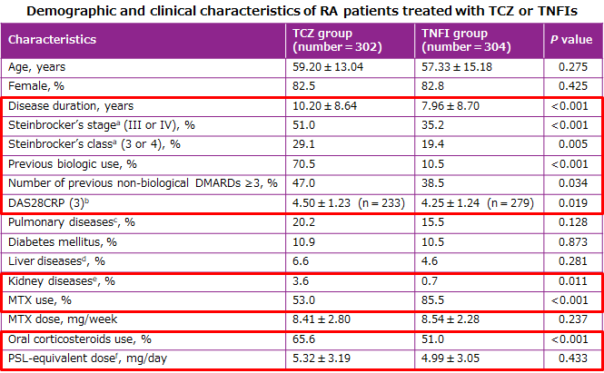
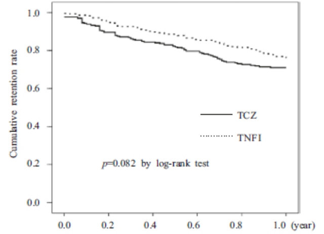

ACTは厳しい症例でもこれまでのスタンダードであったTNF製剤と同等の継続率を示した（REAL レジストリの結果）


TCZ群は年齢・Stage/Classが高く、Bio前治療歴ありや腎機能障害の合併が多いなどTNF阻害薬と比べ状態の悪い患者が多く含まれているにも関わらず、継続率に有意差がなかった

では、1stでACTを使ったら？？？
TCZ群は年齢・Stage/Classが高く、Bio前治療歴ありや腎機能障害の合併が多いなどTNF阻害薬と比べ状態の悪い患者が多く含まれているにも関わらず、継続率に有意差がなかった
では、1stでACTを使ったら？？？